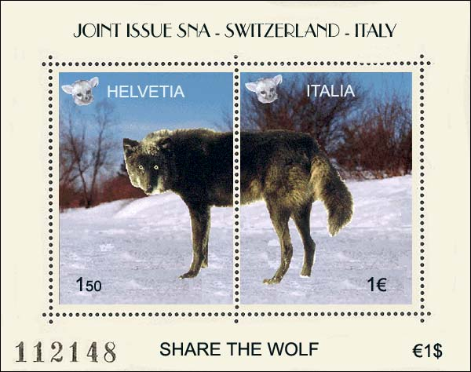

|
MEMORABLE POSTINGS
IN THE RCSD
NEWSGROUP
Victor Manta wrote:
I have read about two
weeks ago about a wolf who killed 27 sheep in Switzerland, and which is
searched by the Swiss authorities. The reason is that if a wolf kills over
17 sheep (a recent law), then the hunters have the right to shoot him down.
The problem is that this wolf has... disappeared (possible
the Swiss sheep were too fat for him), and it is at time probably in Italy.
There isn't an extradition treaty between both countries concerning wolfs,
so no possible measures can be taken against him as long as he decided to
stay abroad.
So my question is: Because this was possible the last Swiss
wolf for the moment (not sure, but let's say), has the Swiss PA the right to
issue a postal stamps showing a wolf? If not, should it put some postmen on
the border with Italy and wait till the wolf returns, and at this very
moment quickly issue the so long awaited stamp?

Tracy Barber
answered:
We've all heard about those Swiss sheep. They are were the
infamous Swiss chocolate comes from. That's why they're so fat!
On a less serious note - hmmmmmm - maybe the Swiss P.O. can
issue a stamp about the worst wolfie killer in it's midst. Kind of like the
worst serial killer in the U.S. That's if they can prove his (?) paw prints
were involved. ...
Maybe the Swiss P.O. can start a joint issue with Italy on
this. Maybe 1/2 of the wolf is on 1 stamp and the other 1/2 is on the other
stamp!
In the U.S., we have Migratory Bird stamps - why not Swiss
migratory wolfie stamps?
Blair Stannard wrote:
As members of the fox family, the
fennecs would oppose any sna issue showing a a wolf. They inform me that
they will not carry covers bearing these stamps, unless the stamps are
overprinted "foxes rule!".
monsieur renaud
business manager
syndicat international des fennecs-ouvrier
Victor Manta answered:
I doubt that the wolves will accept to
play this game. Actually, they represent an endangered species, status that
gives them special privileges, like to legally eat in Switzerland up to 16
sheep without being punished. No fox could ever dream about eating 16 hens
without unpleasant consequences. I just remember "Le petit prince", where
the fox complained that in all countries where there are hens, there are
also hunters...
And, of course, the wolves would like to extend their present privileges, by
seeing themselves on stamps all over the world, shared or not among
countries, like in the example proposed.
Herr Loup Wolf
NG Endangered Species Assoc. (NG = non governmental, not newsgroup)
|